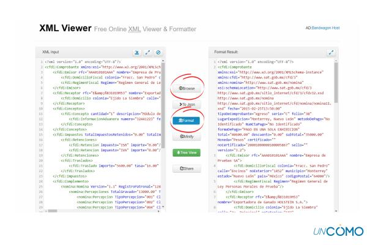
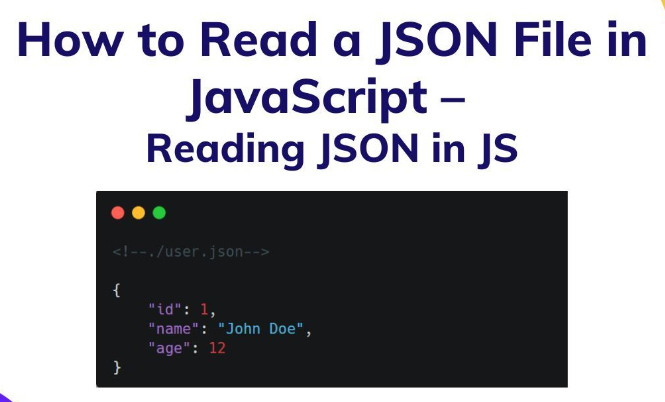

Video Tutorial del Juego Chispum con pruebas unitarias
Archivos Planos
Los archivos planos se pueden describir mejor como bases de datos de texto plano.
Cada registro en un archivo plano está en una línea diferente,
lo que facilita la maniobra a través de los datos almacenados en ellos.
XML

El lenguaje de marcado extensible (XML por sus siglas en inglés) es un formato simple basado en texto para representar la información de manera estructurada: documentos, datos, configuraciones, libros, transacciones, facturas, y mucho más.
JSON

JSON (JavaScript Object Notation) es un formato ligero de intercambio de datos. JSON es de fácil lectura y escritura para los usuarios.
JSON es fácil de analizar y generar por parte de las máquinas.
Apache Parquet
es un formato de archivo en columnas que proporciona optimizaciones para acelerar las consultas.
Es un formato de archivo mucho más eficaz que el archivo . csv o JSON. Para obtener más información